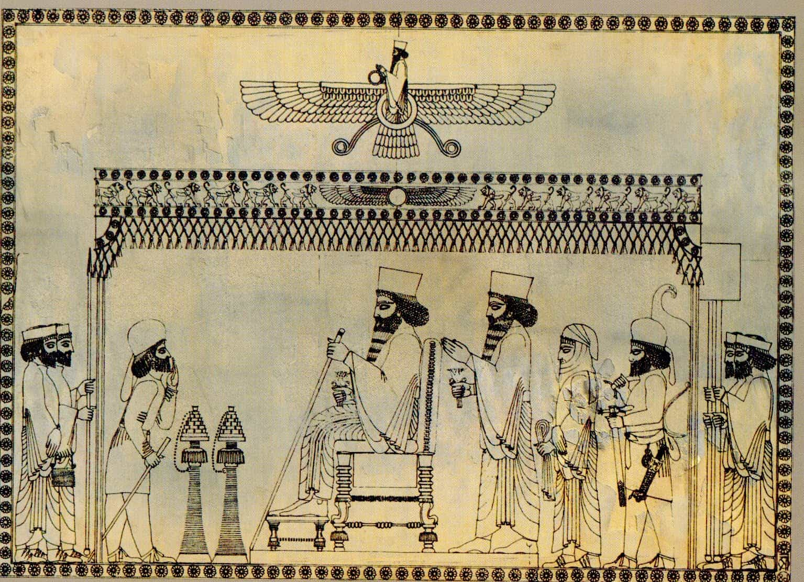

Michael is a copywriter, an author, and a marketing consultant. You can buy his books at his Amazon page here.


I recently decided to get my hands on Revolt Against The Modern World, by Italian Traditionalist Julius Evola. Intrigued by the title, I thought it might provide some kind of structure or game-plan that could help swing the pendulum of our culture back in a more traditional direction.
What I discovered in the book was that, and much more. Some of it I agree with, but some I found spiritually toxic. Today, I thought I’d write up a review highlighting both sides of this very interesting read.
To begin with, there are many sentiments expressed in this book with which any genuine traditionalist can agree. Evola was rabidly, staunchly opposed to many of the same things that modern right-wingers correctly identify as the causes of our society’s ills.
He wrote that any philosophy based on materialism or biology — instead of on higher spiritual principles—is bound to fail. It’s a sentiment I agree with completely, echoing my own foremost criticism of the alt-right.
For example, I take no philosophical issue with the idea of nation-states being populated primarily by the people who created them. And I apply this same standard to every group and tribe on Earth.
My issue with the alt-right arises when people argue that biological similarity, in and of itself and guided by nothing higher, is somehow sufficient for the creation and maintenance of a thriving, successful society.
Historically, this has never been the case. Each example of a society the alt right points to as proof of a “successful European society” was, in fact, a successful religious European society. No successful society—for any race—has been led by a mono-cultural mix of pagans, Christians, atheists, and satanists. Where and when multiculturalism has worked in the past, it has always been in the context of a shared faith.
While bound by the ties of a common culture and language, the members of successful nations were connected primarily by the glue of a common spirituality.
From that starting point, Evola’s premise is that there is a certain hierarchy and order to the invisible layers of nature (those parts of the spiritual realm with which most are unfamiliar). I also agree with this sentiment, as traditional Christian theology teaches that angels have various ranks or belong to various “orders” within the super-substantial realm.
This invisible hierarchy, so a bastardized version of his argument goes, should be the blueprint and foundation of the political and social order found down here on the material plane as well. The “Below,” as he described it, ought to reflect the “Above.”
This concept should make sense to most Christians. We even say in the Lord’s Prayer, “Thy Kingdom come, Thy Will be done, on Earth as it is in Heaven.”
Anchoring the law and state in divine and eternal principles, rather than mortal and fleeting ones, is a powerful bulwark against every form of degeneracy. The world we live in today amounts to little more than competing secular and materialist philosophies which lack even the potential to solve the problems which they seek to address.
Therefore, I agree wholeheartedly with Evola’s diagnosis that the cause of cultural malaise is spiritual disconnection. However, that is where my agreement with his philosophy ends.

Obviously, my primary criticism of Evola’s philosophy is that it’s based in paganism and not Christianity. From the fundamental understanding that material actions should be based in immaterial principles, paganism and Abrahamic religion are really the only two directions that things can go in.
Evola, in my opinion, chose the wrong one.
Like the Masonic philosopher Albert Pike, Evola was an avid student of Indo-Aryan culture and the (pre-)Zoroastrian religion upon which it was founded. Also like Pike, Evola perceived a lot of what he discovered there as the “blueprint” for future Christian beliefs.
It is certainly true that there is some overlap between Zoroastrianism and Christianity. In fact, it is a basic tenet of Orthodox theology that all religions and belief systems contain some amount of truth, even if small in measure. Since we are all created in the image of God, so the thinking goes, it is impossible for anyone to be wrong about absolutely everything.
However, the problem with the Evolian line of thinking on the topic is that, rather than recognizing certain ancient traditions as foreshadowing the coming Incarnation of Christ, men like Pike and Evola simply equated the two traditions instead. This is a very common error made by pagan thinkers, and one which they have been making since antiquity.
This is quite similar to how the Old Testament religion of Judaism (which I was raised in) simply “set the table” for the coming New Testament religion of Christianity. The feasts, festivals, and paradigms were simply laying out the signposts and markers which culminated in the events of the Incarnation and Gospel narrative.
It is my opinion that the Orthodox Christian Church, composed of Tradition and Scripture and Canon Law, is the ultimate and closest-to-perfect example of the kind of society which Tradition should create. None of it is “of the Earth,” as it contains the revealed and reflected laws of Heaven put into action in the material world.
Of course, all forms of Christianity should operate similarly if they were to hold true to the dogmas passed down by the Apostles and their students. However, given the tens of thousands of versions of Protestantism—and the creeping modernist influence in the post-Vatican-II Roman Catholic Church—it seems that not all Churches calling themselves “Christian” are living out the fullness of faith handed down over time.
Now certainly, there is the question of whether the Church should be in charge of the State — or whether it should simply bolster its members in relative cultural isolation in order to remain steadfast and true regardless of where the societal winds are blowing. It’s a good question, and the subject of much discussion within Christian circles.
On the one hand, I think most tradition-minded people can agree that a society established with the health of families and their members in mind (rather than the agenda of the rich and powerful) is ideal. That is certainly the situation which appears to lead to both material and spiritual prosperity.
On the other hand, an equally-strong argument can be made that traditional Christianity — as practiced in the soul and conduct of an individual — is an eternal, unchanging, robust ship which does not sink when the cultural tides get tough. In fact, you could argue that the worse the society around you gets, the better the opportunity to oppose the schemes of the devil in favor of following Christ’s example.
In the end, my own opinion is that we should focus primarily on sanctifying ourselves and our immediate families and communities. Through that, and only after that, does it make sense to go after cultural change.
After all, the state of a man’s soul does not depend on what is going on around him—it depends on his response to it. It depends on whether his internal state remains strong like an oak tree or bends in the wind.
In that sense, the “Revolt Against The Modern World“ is primarily an internal one. It is in the building of a character that refuses to bow down before the idol of modernity. It is in the sharpening of a mind which refuses to be softened by the High Priests of culture and their relentless propaganda.
My friends, the truth is this: there is more freedom to be found in the “inner world” than in the “outer” one. In a time of unprecedented falsehood and degeneracy, let us hold fast to what is true and right and good. This is the only path to liberation, and the road traveled by all whose soul seeks genuine purpose.
Read More: 9 Ideas From Julius Evola’s “Ride The Tiger” That Are Still Valid Today